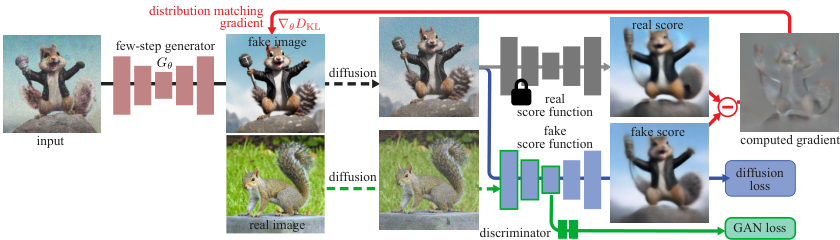
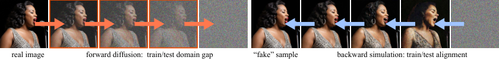
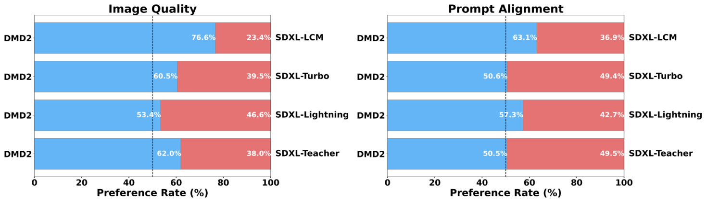

目录
1论文摘要
扩散蒸馏的目标是把多步扩散教师压成 1~4 步的学生生成器。此前的 DMD(Distribution Matching Distillation, CVPR 2024) 通过匹配教师与学生的输出分布(而非逐步轨迹)实现了单步蒸馏,但训练稳定性依赖一个额外的回归损失——它要求先用教师 + 确定性采样器跑完整采样链,生成数百万「噪声-图像」对,仅数据构造成本就达到 DMD2 总训练算力的 4 倍以上,且把学生质量锁死在教师的采样路径上。
DMD2 用三项技术解除这些限制:① 去回归损失 + 双时间尺度更新规则 (TTUR)——每 1 次生成器更新配 5 次 fake score(critic)更新,解决纯分布匹配的稳定性问题;② 集成 GAN 损失——在 fake score 网络的 UNet bottleneck 上接轻量分类头,判别真实图像与生成图像,让学生首次接触到教师之外的监督信号,从而超越教师;③ 多步生成 + backward simulation——训练时模拟推理时的多步生成输入,消除训练-推理输入不匹配。
ImageNet-64 单步 FID(加长训练),优于教师 EDM SDE 采样 (1.36) 与全部单步基线(表 1)
SD v1.5 蒸馏 zero-shot COCO-2014 30K prompt FID,优于 DMD1 (11.49) 与 50 步教师 (8.59)(表 5)
相对教师的推理成本下降(摘要);SDXL 蒸馏 4 步即可生成 1024×1024 图像并胜过 50 步教师(用户研究)
一句话核心贡献:证明「纯分布匹配 + 扩散判别器 GAN」足以稳定蒸馏且能超越教师——回归损失不是必需品,而 GAN 用真实数据提供的额外监督是把蒸馏上限从「教师水平」抬到「数据分布水平」的关键。
2研究背景与动机
2.1 DMD1 的三个具体失败模式
💰 回归损失的数据构建成本失控
DMD1 的回归损失需要预生成「噪声→教师图像」对:SDXL 生成一对约 5 秒,覆盖 LAION 6.0 的 1200 万 prompt 约需 700 A100-天,超过 DMD2 总训练算力的 4 倍(论文 §3 末 + 附录 F)。
🔒 学生被教师的采样路径锁死
回归损失强制学生遵循教师确定性采样器的输出,「抵消了非配对分布匹配的核心优势」,学生质量被教师上界限制——这正是 DMD1 无法超越教师的结构性原因(摘要 + §4.1)。
🚶 只支持单步学生
原始 DMD 仅支持 one-step 学生(§4.4 开头)。而 SDXL 这类大规模模型受限于学生容量与优化景观复杂度,一步蒸馏难以到位,需要多步训练机制。
2.2 核心洞察 (Insight)
洞察一(为什么去回归后会不稳定):fake score 网络 $\mu_{\text{fake}}$ 在生成器的非平稳输出分布上在线训练,跟不上分布变化时给出有偏梯度。回归损失本质上是在用「锚点」掩盖这个问题。解法不是重新加锚,而是让 critic 更新得更快——GAN 文献里的 TTUR 思想。
洞察二(为什么能超越教师):DMD 的 real score 来自冻结教师,教师对真实分布的估计误差会直接传给学生,而学生从未见过真实数据、无法自我修正。在蒸馏中引入以真实数据为参照的 GAN 判别,等于给学生一条独立于教师的监督通道。
洞察三(多步的隐藏陷阱):以往多步蒸馏训练时对「加噪真实图像」去噪,推理时输入却是「上一步生成器输出再加噪」——两者分布不同,损害质量。训练时直接模拟推理管线即可对齐。
假设的失效条件:① TTUR 依赖「fake critic 更新频率足够高即可跟踪分布」——若生成器单步分布漂移过快(如过大的生成器学习率),5:1 也可能不够,论文建议以「亮度等通用图像统计稳定」为调节标准(附录 C);② GAN 判别器在 VAE latent 空间、且只在 bottleneck 特征上判别——若 latent 空间与像素空间差异大(broken VAE),判别信号会失真;③ backward simulation 假设「训练时模拟的中间步输入 ≈ 推理时真实中间步输入」,当生成器快速更新时这仍是移动靶。
3算法总体框架
3.1 输入 / 输出定义
| 量 | 定义 | 形状(SDXL 路径) |
|---|---|---|
| $z$ | 生成器输入噪声,$z\sim\mathcal{N}(0,\mathbf{I})$ | $[B, 4, 128, 128]$ (VAE latent,$f{=}8$ 下采样) |
| $G_\theta(z, t, c)$ | 学生生成器 = 微调的 UNet(与教师同构),输入噪声/带噪 latent + 时间步 + 文本嵌入 | $[B,4,128,128] \to [B,4,128,128]$ |
| $\mu_{\text{real}}$ | 冻结教师(提供 real score) | 同 UNet,requires_grad=False(sd_guidance.py:50) |
| $\mu_{\text{fake}}$ | fake score 网络 = 可训练的 UNet 拷贝,在线拟合学生输出分布 | 同 UNet,requires_grad=True(sd_guidance.py:58) |
| $D$ | GAN 判别器 = $\mu_{\text{fake}}$ 的 UNet bottleneck + 轻量分类头 | $[B,4,128,128] \to [B]$ 标量 logit |
| $F(x,t)$ | 前向扩散(DDIM 调度加噪) | 保持 $[B,4,128,128]$ |
3.2 符号表
| 符号 | 含义 |
|---|---|
| $s_{\text{real}}, s_{\text{fake}}$ | 真实/生成分布的 score 函数 $\nabla_x \log p$,由 $\mu_{\text{real}}, \mu_{\text{fake}}$ 的去噪输出按式 (1) 换算 |
| $p_{\text{real},t}, p_{\text{fake},t}$ | 真实/生成样本经 $t$ 步前向扩散后的边缘分布 |
| $\alpha_t, \sigma_t$ | noise schedule 系数;$q(x_t|x)\sim\mathcal{N}(\alpha_t x, \sigma_t^2 \mathbf{I})$ |
| $\mathcal{L}_{\text{DMD}}$ | 分布匹配损失(KL 的梯度形式,式 2) |
| $\mathcal{L}_{\text{GAN}}$ | 扩散判别器 GAN 损失(式 4) |
| $\{t_1,\dots,t_N\}$ | $N$ 步采样的固定时间表,4-step 用 999/749/499/249 |
| TTUR 5:1 | fake score 每步更新,生成器每 5 步更新一次 |
3.3 总体数据流
(多步时: backward simulation 模拟中间步)"] --> X0["生成图像 x̂ (VAE latent) [B,4,128,128]"] end X0 -->|"F(x,t) 加噪 t~[0,1000]"| XT["x_t"] XT --> RT["μ_real (冻结教师)
real score"] XT --> FT["μ_fake (可训练 UNet)
fake score"] RT -->|"score 差 → KL 梯度"| DM["分布匹配梯度 (式 2)"] FT --> DM XT -.->|"同一 x_t 送判别分支"| DISC["D: μ_fake bottleneck
+ 分类头 (式 4)"] REAL["真实图像 (LAION 500K latents)"] -->|"加噪 F(x,t)"| DISC DM --> LSUM["生成器损失 = L_DMD + λ·GAN"] DISC --> LSUM X0 -->|"detach"| FTRAIN["μ_fake 的去噪损失
(ε-MSE, 每步)"] DISC --> GANTRAIN["判别器损失 (每步)"]
图 1 DMD2 总体数据流:两个损失通道(分布匹配 + GAN)共同驱动生成器;fake score 网络与 GAN 判别器共享 UNet 主体,每步更新;生成器每 5 步更新一次(TTUR)。

4模块一:去回归损失 + 双时间尺度更新 (TTUR)
Why失败模式定量证据:在 ImageNet-64 上朴素去掉回归损失,FID 从 2.62 恶化到 3.48(表 3 第 2 行);训练过程生成样本的平均像素亮度剧烈震荡不收敛(附录 C、Fig.8)。作者归因于 fake score 网络 $\mu_{\text{fake}}$ 的在线估计滞后:它在生成器非平稳输出分布上训练,更新不足时 score 估计有偏,生成器梯度方向随之漂移。
解法:借用 GAN 的 TTUR 思想(Heusel et al. 2017),但用在更新频率而非学习率上——fake score 每步更新,生成器每 5 步更新一次。附录 C 的收敛曲线(Fig.9)显示:频率 1(朴素)不稳定;频率 10 稳定但训练慢;5 是稳定性与速度的最佳平衡;「fake 模型学习率放大 5 倍」的异步学习率方案效果明显更差——说明瓶颈在估计精度而非梯度步长。
4.1 数学形式化
DMD 的核心是 KL 散度的梯度可以写成两个 score 之差(论文式 1、2):
源码实现(sd_guidance.py:235-241)把 score 差换算到 $x_0$ 空间的「伪真值方向」并做尺度归一化:
p_real = (latents - pred_real_image) # 教师预测的残差方向 p_fake = (latents - pred_fake_image) # fake score 的残差方向 grad = (p_real - p_fake) / |p_real|.mean() # 归一化分布匹配梯度 loss = 0.5 * MSE(latents, (latents - grad).detach()) # fake-loss trick
机制解释——为什么归一化:score 差的绝对幅度随 $t$ 变化巨大(高噪声时 score 本身大),按 $|p_{\text{real}}|$ 的 batch 均值归一化让不同 $t$ 的梯度贡献大致同量级,避免训练被个别时间步主导。torch.nan_to_num(sd_guidance.py:239)兜底数值异常。
4.2 模块内部流程
(教师/判别器梯度关闭)"] S -->|"否: 仅 critic 轮"| CT["fake score 去噪损失 + GAN 判别损失"] GT --> UPD["更新 G_θ, lr=5e-7"] CT --> UPD2["更新 μ_fake + 分类头, 每步"] UPD2 --> NXT["下一步"]
图 3 TTUR 交替更新:代码中 COMPUTE_GENERATOR_GRADIENT = step % dfake_gen_update_ratio == 0(train_sd.py:330),ratio=5。
4.3 监督信号
本模块的监督即式 (2) 的 KL 梯度,无任何配对数据。这是与 DMD1 的本质区别:DMD1 需要额外的 $\mathcal{L}_{\text{reg}}=\mathbb{E}_{(z,y)}d(G_\theta(z),y)$(式 3,$y$ 为教师确定性采样输出,$d$=LPIPS),DMD2 将其完全移除(SD v1.5/SDXL 多步路径;SDXL 1-step 例外,见 §9)。
5模块二:GAN 损失与扩散判别器
How动机:TTUR 只追平 DMD1(2.61 vs 2.62),学生仍受教师 score 估计误差限制。GAN 引入真实数据(LAION-Aesthetic 5.5+ 的 500K 张图,预提取 VAE latents)作为独立监督源,这是蒸馏模型首次能「超出教师所见」。
5.1 数学形式化
判别发生在多个噪声水平下:$x$ 与 $G(z)$ 都先经前向扩散加噪 $F(\cdot,t)$($t$ 均匀采样于 $[0,1000]$,sd_guidance.py:147-151)再送入判别分支。这继承了 DiffusionGAN 的思想:加噪相当于对判别输入做随机平滑,让单张图判别变成分布层面判别,抑制 GAN 过拟合与伪影。
5.2 网络结构表(判别分支)
| 层/算子 | 输入(SDXL, 1024² 图) | 输出 |
|---|---|---|
| fake UNet encoder + mid block(共享) | $[B,4,128,128]$ 带噪 latent | bottleneck 特征 $[B,1280,4,4]$ |
| Conv2d k4 s2 + GN + SiLU ×3 | $[B,1280,32,32]$ | 逐级下采样 $32{\to}16{\to}8{\to}4$ |
| Conv2d k4 s4(池化) | $[B,1280,4,4]$ | $[B,1280,1,1]$ |
| Conv2d k1(线性分类头) | $[B,1280,1,1]$ | $[B]$ 标量 logit |
结构定义在 sd_guidance.py:108-122(SDXL 版,3 个 stride-2 卷积;SD v1.5 版只有 1 个,sd_guidance.py:125-133,因其 latent 分辨率 64²,bottleneck 仅 8×8)。判别器与 fake score 网络共享 UNet 主体:分类分支从 classify_forward(sd_unet_forward.py:249-251)返回的 down/mid 特征列表中取最后一项(bottleneck),整条判别链路与 fake score 训练在同一轮更新中完成(train_sd.py:386-408)。
5.3 前向流程与损失
- 真实图像(latent)与生成图像分别加噪 $F(\cdot,t)$,$t\sim U[0,1000]$;
- 经 fake UNet(带
classify_mode=True)提 bottleneck 特征; - 分类头输出 logit,判别器损失为 softplus 组合:
softplus(logits_on_fake) + softplus(-logits_on_real)(sd_guidance.py:391,非饱和 GAN 的数值稳定等价形式); - 生成器侧接收
softplus(-logits_on_fake)(sd_guidance.py:323),乘权重后与分布匹配损失相加(train_sd.py:371-372)。
为什么把判别头挂在 fake UNet 上而不是独立网络:① 省一份 UNet 前向与显存——判别特征复用 fake score 已有的 encoder 计算;② bottleneck 特征天然聚合了全图语义,与「全图真实感」判别目标对齐;③ 该设计承自 SDXL-Lightning / UFOGen / LADD 的「用扩散模型做判别器」路线(论文 §4.3)。
5.4 监督信号
判别器:真实图像(latent + 文本嵌入)vs 生成图像(latent + 文本嵌入),逐 batch 二分类。生成器:GAN 梯度 + 分布匹配梯度联合。权重:ImageNet $3\times10^{-3}$ / SD v1.5 $10^{-3}$ / SDXL $5\times10^{-3}$(后者论文未写,来自 experiments/sdxl/*.sh 的 gen_cls_loss_weight)。
6模块三:多步生成与 Backward Simulation
How6.1 多步采样格式
固定时间表 $\{t_1,\dots,t_N\}$,4-step 用 999, 749, 499, 249(教师以 1000 步训练)。推理时按 consistency model 的方式交替去噪-加噪:
实现见 demo/text_to_image_sdxl.py:150-171:硬编码 all_timesteps=[999,749,499,249]、step_interval=250,每步 UNet 前向后用 get_x0_from_noise 求 $x_0$ 预测,再 scheduler.add_noise 到下一时间步。与 diffusers 集成时用 LCMScheduler + timesteps=[999,749,499,249](README)。
6.2 训练-推理输入不匹配(核心问题)
以往做法(左图)
训练时把加噪的真实图像给学生去噪。推理时学生的输入却是「上一步学生输出再加噪」——分布完全不同,尤其是中间步,学生从未见过「自己生成的图像」长什么样。
DMD2 做法(右图)
训练时用当前学生生成器跑前几步生成带噪合成图像 $x_{t_i}$,让学生去噪这些「自己的中间输出」。因为只跑几步,计算可行。这把训练输入分布与推理完全对齐。

6.3 实现细节(sd_unified_model.py:127-162)
- 每个 batch 随机选中间步 $k\sim U\{0,\dots,N{-}1\}$,跨 GPU 同步(broadcast);
- 从纯噪声出发,用当前生成器无梯度跑 $k$ 步(去噪→重加噪交替,新采样的不相关噪声);
- 把跑出来的 $x_{t_k}$ 作为学生的训练输入,配对时间步 $t_k$;
- 若 $t_k$ 为最后一个时间步(纯噪声),直接用原始噪声替换(
sd_unified_model.py:198-199)。
与并发工作 Imagine Flash 的差异(论文 §4.5):对方动机相同(backward distillation),但其回归损失中的教师从未在合成图像上训练过——训练-测试差距被转移给教师,误差沿采样路径累积;DMD2 的分布匹配损失不依赖学生的输入分布(对任意 $x_t$ 都能给出 score 差),天然规避此问题。
6.4 监督信号
与单步一致:分布匹配(式 2)+ GAN(式 4),只是学生输入从 $z$ 换成模拟的 $x_{t_k}$。消融显示去掉 backward simulation 后 SDXL patch FID 从 20.86 升到 24.21(表 4)。
7损失函数总表
| 损失项 | 公式 | 权重(真值 + 出处) | 作用 |
|---|---|---|---|
| 分布匹配 $\mathcal{L}_{\text{DMD}}$ | 式 (2),score 差回传 | 1.0(train_sd.py:664 默认,实验脚本未覆盖) | 把学生输出分布拉向教师覆盖的数据分布 |
| fake score 去噪损失 | $\mathbb{E}\|\epsilon_{\text{pred}} - \epsilon\|^2$(ε-prediction MSE,sd_guidance.py:295-297) | 1.0(直接加入,train_sd.py:398) | 在线训练 $\mu_{\text{fake}}$ 拟合学生输出分布 |
| GAN 判别器损失 | softplus 组合(式 4 等价) | $1\times10^{-2}$(guidance_cls_loss_weight,全部实验脚本一致) | 训练判别头区分真/生成图 |
| GAN 生成器损失 | $\text{softplus}(-D)$ | ImageNet $3\times10^{-3}$ / SD v1.5 $1\times10^{-3}$ / SDXL $5\times10^{-3}$(附录 F + gen_cls_loss_weight) | 给生成器教师之外的监督,超越教师的关键 |
| 回归损失(仅 SDXL 1-step 预训练) | 式 (3),LPIPS | 仅 10K 对短时预训练初始化(experiments/sdxl/README.md) | 1-step SDXL 从纯噪声直接回归易 block noise 伪影,需锚点初始化 |
宣称 vs 实现的一个差异:论文标题级卖点是「eliminate the regression loss」,但源码与 README 明确:SDXL 1-step 生成器仍需先用 10K 对噪声-图像 ODE 对做回归预训练做初始化(再切换到 DMD2 主训练),并配合 timestep shift(条件时间步 399)对抗 block noise 伪影。4-step 路径才是完全无回归。⚠️【存疑】论文正文说「这些调整对多步模型或其他 backbone 不必要」,但 1-step 需要的根因(直接从纯噪声一步映射的优化难度)论文未给出消融量化。
8训练与推理流程
8.1 训练流程(每个 step)
随机选 k∈[0,4), 生成器无梯度跑 k 步
得模拟输入 x_tk"] B -->|"1-step"| D["直接用 z, t=399(SDXL)或 999"] C --> E["学生 UNet 前向 → x0 预测"] D --> E E --> F{"step % 5 == 0?"} F -->|"生成器轮"| G["① 分布匹配: x0 加噪→ 教师/fake score 各自预测
→ score 差归一化梯度回传
② GAN: 判别头 softplus(-D) ×5e-3
→ backward + clip(10.0) + AdamW 更新 G"] F -->|"仅 critic 轮"| H["fake score ε-MSE + 判别器 softplus 损失
→ 更新 μ_fake + 分类头"] G --> I["下一步"] H --> I style G fill:#dbeafe,stroke:#3b82f6,color:#1e3a5f style H fill:#dcfce7,stroke:#22c55e,color:#14532d
图 5 训练流程:生成器轮与 critic 轮按 5:1 交替;两个损失通道在同一生成器轮内联合回传。
8.2 推理流程(4-step SDXL)
图 6 推理流程:4 次 UNet 前向 + 1 次 VAE 解码;guidance scale=0(CFG 已蒸馏进权重),无教师参与。
9⚙️ 工程实现细节
9.1 源码级超参总表(SDXL 4-step 主线)
| 超参 | 值 | 出处 |
|---|---|---|
| 生成器/critic 学习率 | 5e-7(两者相同) | experiments/sdxl/...backsim_scratch.sh:9-10 |
| TTUR 比例 | 5(critic 每步、生成器每 5 步) | 同上 :28(dfake_gen_update_ratio) |
| 优化器 | AdamW, betas (0.9, 0.999), weight decay 0.01 | train_sd.py:191-202 |
| 梯度裁剪 | max_grad_norm 10.0 | 实验脚本 :21 |
| 全局 batch | 2/GPU × 8 节点 × 8 GPU = 128 | 脚本 + 论文附录 F.4 |
| 训练步数/时长 | 19K iters / 57 小时(FID 19.32 @19k checkpoint) | experiments/sdxl/README.md Model Zoo |
| 分辨率 | 1024²(latent 128²) | 脚本 :16-17 |
| 教师 CFG(real_guidance_scale) | 8 | 脚本 :19 |
| GAN 生成器权重 | 5e-3 | 脚本 :35(gen_cls_loss_weight) |
| GAN 判别器权重 | 1e-2 | 脚本 :36(guidance_cls_loss_weight) |
| 扩散 GAN 时间步上限 | 1000(全噪声范围) | 脚本 :38 |
| DM 损失 t 采样范围 | [2%, 98%] × 1000 | max_step_percent 0.98(脚本 :32)+ min_step_percent 默认 0.02(train_sd.py:651) |
| 精度 | bf16 autocast(VAE 保持 fp32;ImageNet-64 EDM 路径 fp16 会发散,需 bf16) | sd_unified_model.py:111 + experiments/imagenet/README.md |
| 分布式 | FSDP hybrid_shard(节点内分片)× 8 节点 | train_sd.py:185-189 + create_sdxl_fsdp_configs.py |
9.2 三套官方配置横向对照
| 配置 | 教师 | lr(生成器) | TTUR | GAN 权重 | batch(全局) | 步数/时长 | 成果 |
|---|---|---|---|---|---|---|---|
| ImageNet-64 主线 | EDM | 2e-6 | 5:1 | 3e-3 | 280(40×7 GPU) | 200K / 53h | FID 1.51 |
| ImageNet-64 加长(resume) | EDM | 5e-7 | 5:1 | 3e-3 | 280 | +140K / 38h | FID 1.28 |
| SD v1.5 一步 | SD v1.5 | 1e-5 → 5e-7 | 10:1 | 1e-3 | 2048(32×64) | 40K+5K / 26h | FID 8.35 |
| SDXL 4-step | SDXL | 5e-7 | 5:1 | 5e-3 | 128(2×64) | 19K / 57h | FID 19.32 |
| SDXL 1-step | SDXL | 5e-7 | 5:1 | 5e-3 | 128 | 24K / 57h | FID 19.01 |
| SDXL 4-step LoRA | SDXL | 5e-5 | 5:1 | 5e-3 | 128 | 16K / 63h | FID 19.68 |
注:步数/时长与 FID 取自各 experiments/*/README.md 的 Model Zoo;SD v1.5 为两阶段(先无 GAN lr=1e-5 40K,再开 GAN lr=5e-7 5K);SDXL 1-step 含 10K 对回归预训练初始化。SD v1.5 的 TTUR 为 10:1(sdv1.5/*.sh),与论文附录 F.3 一致——TTUR 频率并非全局常数,随 backbone 调整。
9.3 资源账
- 训练显存/硬件:SDXL 主线 64×A100(8 节点)× 57h ≈ 3648 A100·h;ImageNet 7×A100 × 53h ≈ 371 A100·h;SD v1.5 64×A100 × 26h ≈ 1664 A100·h。均来自 Model Zoo 的 Hours 列。
- 推理开销:4-step = 4 次 UNet 前向 + 1 次 VAE decode,CFG=0(无加倍);摘要称相比教师(50 步 × CFG=2 次/步前向)推理成本降 500×。⚠️【待核实】500× 的精确定义(50×2 前向 / 4 前向 ≈ 25×于前向数;论文摘要原文即 "500X reduction in inference cost",未附计算过程,推测含 VAE/文本编码等摊销差异。
- 依赖版本:Python 3.8 conda 环境,基于 diffusers(UNet2DConditionModel / DDIMScheduler)+ accelerate(FSDP)+ peft(LoRA)+ EDM 第三方代码(
requirements.txt+ README)。 - 数据预处理:① prompt 侧:LAION-Aesthetic 6.25+ 300 万条,取 caption 存 pkl;② GAN 真实图:LAION-Aesthetic 5.5+ 500K 张 ≥1024²,预先离线提取 VAE latents 存 LMDB(
generate_vae_latents.py,训练时直接读 latent,省 VAE 编码算力且判别在 latent 空间进行);③ ImageNet 转 LMDB(create_imagenet_lmdb.py)。
9.4 落地坑(源码/README 明示)
- 显存:训练要同时持有 3 份 UNet(生成器 + 冻结教师 + fake score)——这是 FSDP 分片 + 梯度检查点(
gradient_checkpointing)+ 教师 bf16 的原因;单卡复现门槛高。 - FSDP 参数不同步 bug:分类头随机初始化在 hybrid_shard 模式下各节点不同步,必须先存 checkpoint 0 再全体重载(
train_sd.py:104-105注释 + L164-180)。 - ImageNet EDM 路径 fp16 发散:需 bf16(
experiments/imagenet/README.md明示)。 - SDXL 原生 VAE 不支持半精度:须 fp32 或换 madebyollin/sdxl-vae-fp16-fix 或 Tiny VAE(
sd_unified_model.py:107-109+ demo)。 - 已知未解 issue:FSDP 下 SDXL 训练极慢、LoRA 训练反而比全量微调更慢且不省显存(README Known Issues)。
- LCMScheduler 时间步陷阱:diffusers 推理必须显式传
timesteps=[999,749,499,249],LCM 默认时间步与训练不一致(README 代码注释)。
10实验结果
10.1 ImageNet-64×64 类条件生成(表 1)
| 方法 | 前向次数 ↓ | FID ↓ |
|---|---|---|
| BigGAN-deep | 1 | 4.06 |
| ADM | 250 | 2.07 |
| RIN | 1000 | 1.23 |
| StyleGAN-XL | 1 | 1.52 |
| Progressive Distillation | 1 | 15.39 |
| DFNO | 1 | 7.83 |
| BOOT | 1 | 16.30 |
| TRACT | 1 | 7.43 |
| Diff-Instruct | 1 | 5.57 |
| Consistency Model | 1 | 6.20 |
| iCT-deep | 1 | 3.25 |
| CTM | 1 | 1.92 |
| DMD1 | 1 | 2.62 |
| DMD2(Ours) | 1 | 1.51 |
| DMD2 + 加长训练 | 1 | 1.28 |
| EDM 教师(ODE) | 511 | 2.32 |
| EDM 教师(SDE) | 511 | 1.36 |
单步 DMD2 (1.51) 同时超过教师 ODE 采样 (2.32)、DMD1 (2.62) 与 CTM (1.92);加长训练 (1.28) 进一步超过教师 SDE (1.36),成为单步 SOTA。
10.2 SDXL 文生图(zero-shot COCO 2014,10K prompt,表 2)
| 方法 | 前向次数 ↓ | FID ↓ | Patch FID ↓ | CLIP ↑ |
|---|---|---|---|---|
| LCM-SDXL | 1 | 81.62 | 154.40 | 0.275 |
| LCM-SDXL | 4 | 22.16 | 33.92 | 0.317 |
| SDXL-Turbo | 1 | 24.57 | 23.94 | 0.337 |
| SDXL-Turbo | 4 | 23.19 | 23.27 | 0.334 |
| SDXL-Lightning | 4 | 24.46 | 24.56 | 0.323 |
| DMD2(Ours) | 1 | 19.01 | 26.98 | 0.336 |
| DMD2(Ours) | 4 | 19.32 | 20.86 | 0.332 |
| SDXL 教师 cfg=6 | 100 | 19.36 | 21.38 | 0.332 |
| SDXL 教师 cfg=8 | 100 | 20.39 | 23.21 | 0.335 |
4-step DMD2 的 FID (19.32) 优于 cfg=6 教师 (19.36),patch FID (20.86) 优于两个教师配置——在蒸馏常用指标上超越教师。人类评估(Fig.5)显示 4-step DMD2 在图像质量上 24% 胜过 50 步教师,文本对齐持平,同时优于 SDXL-Turbo / LCM / Lightning 全部 4-step 基线。

10.3 SD v1.5 蒸馏(附录表 5 摘录)
| 方法 | 步数 | 延迟 ↓ | FID ↓ |
|---|---|---|---|
| GigaGAN | 1 | 0.13s | 9.09 |
| InstaFlow-0.9B | 1 | 0.09s | 13.10 |
| UFOGen | 1 | 0.09s | 12.78 |
| DMD1 | 1 | 0.09s | 11.49 |
| DMD2 | 1 | 0.09s | 8.35 |
| SD v1.5 教师(50 步 PNDM, cfg=3) | 50 | 2.59s | 8.59 |
| SD v1.5 教师(200 步 SDE, cfg=2) | 200 | 10.25s | 7.21 |
单步 FID 8.35,较 DMD1 提升 3.14 点,超过 50 步教师;与 200 步 SDE 教师 (7.21) 仍有差距。
11消融实验
11.1 ImageNet-64(表 3)
| DMD | 去回归 | TTUR | GAN | FID ↓ |
|---|---|---|---|---|
| ✓ | 2.62 | |||
| ✓ | ✓ | 3.48(不稳定) | ||
| ✓ | ✓ | ✓ | 2.61 | |
| ✓ | ✓ | ✓ | ✓ | 1.51 |
| ✓ | 2.56 | |||
| ✓ | ✓ | 2.52 |
- 去回归 → TTUR:去掉回归损失退化 0.86 点,TTUR 恢复 0.87 点(2.61 ≈ 2.62)——验证「不稳定根源是 critic 估计滞后」的假设,回归损失不是唯一稳定器。
- +GAN:再降 1.1 点到 1.51,是超越教师的核心增量。
- 纯 GAN 基线:2.56,只加 TTUR 无改善(2.52)——分布匹配与 GAN 的组合有互补性,不是简单叠加。
11.2 SDXL(表 4)
| 变体 | FID ↓ | Patch FID ↓ | CLIP ↑ |
|---|---|---|---|
| 去 GAN | 26.90 | 27.66 | 0.328 |
| 去分布匹配(纯 GAN) | 13.77(看似最好) | 27.96 | 0.307 |
| 去 backward simulation | 20.66 | 24.21 | 0.332 |
| DMD2 完整 | 19.32 | 20.86 | 0.332 |
「纯 GAN FID 最低」的陷阱(论文自己指出):去掉分布匹配后 FID 降到 13.77,但 CLIP 掉到 0.307、patch FID 反而最差——模型贴近真实图像边缘分布却没有对齐文本,「FID 变好」是分布覆盖变宽的假象,美学质量显著下降(Fig.7 定性)。选型启示:单看 FID 会被纯 GAN 蒸馏误导。

11.3 TTUR 机制消融(附录 C,Fig.9)
更新频率 1 不稳定;5 稳定且收敛快;10 稳定但慢;「fake 学习率×5」的异步 lr 方案明显差于更新频率方案——瓶颈是估计精度不是步长。亮度监控(附录 C,Fig.8)是作者推荐的稳定性观测指标。
12🔄 同类方法对比分析
12.1 少步文生图蒸馏方法横向对比
| 方法 | 年份 | 蒸馏范式 | 监督信号 | 训练数据 | 步数 | COCO FID ↓ | 开源 |
|---|---|---|---|---|---|---|---|
| DMD2 | 2024 | 分布匹配(score 差)+ GAN | 教师 score + 真实图判别 | LAION-Aes 6.25+ 3M prompt + 500K 真图 | 1 / 4 | 8.35(SD1.5)/ 19.32(SDXL) | ✅ 代码+权重 |
| DMD1 | 2024 | 分布匹配 + 回归(LPIPS) | 教师 score + ODE 配对 | 需 700 A100·天预生成配对 | 1 | 11.49(SD1.5) | ✅ |
| SDXL-Turbo(ADD) | 2023 | 对抗蒸馏(学生判别学生) | 自判别 + 分数蒸馏 | LAION(未配对) | 1 / 4 | 24.57 / 23.19(SDXL) | ✅ 权重 |
| SDXL-Lightning | 2024 | 渐进式对抗蒸馏 | 教师逐步输出 + 判别 | LAION | 1 / 2 / 4 / 8 | 24.46(SDXL) | ✅ 权重 |
| LCM / LCM-LoRA | 2023 | 一致性蒸馏(CDI) | 教师 ODE 轨迹自一致性 | 无需配对(在线) | 1~8 | 22.16(SDXL 4-step) | ✅ |
| CTM | 2023 | 一致性轨迹模型 | 教师任意两点间转移 | COCO/ImageNet | 1 | 1.92(ImageNet-64) | ✅ |
| UFOGen | 2023 | 联合训练(生成+去噪双目标) | 混合去噪 + GAN | CC3M+LAION | 1 | 12.78(SD1.5 口径) | ✅ |
注:COCO FID 的 prompt 数与分辨率口径不同(SD1.5:30K prompt/256²;SDXL:10K prompt/512²),跨列不可直接比,只看各自口径内的相对位置。各方法数字均取自 DMD2 论文表 1/2/5(即同一评估管线下的横向数字)。
12.2 机制层面对比结论
- vs DMD1:同属分布匹配家族,差异在「稳定机制」——DMD1 用回归损失锚定(代价:配对数据 + 教师上界),DMD2 用 TTUR(代价:5× critic 前向) + GAN(收益:真实数据监督)。DMD2 在两代方法同口径对比中全面占优(11.49 → 8.35)。
- vs 对抗蒸馏(ADD/Turbo/Lightning):后者没有分布匹配项,仅靠判别器;DMD2 消融显示纯 GAN 的 FID 虽低但 CLIP/patch FID 崩(表 4)——分布匹配承担了「对齐教师语义分布」的角色,GAN 承担「真实感细节」,两者互补。
- vs 一致性蒸馏(LCM/CTM):一致性类方法约束同轨迹自洽,不需真实数据;但约束的是教师 ODE 轨迹的内部几何,上限受教师约束;DMD2 的分布匹配 + GAN 可超出教师(表 1 单步超教师 ODE)。
- vs UFOGen:同为「扩散+GAN 混合」,UFOGen 是从头联合训练,蒸馏语义弱;DMD2 是纯蒸馏框架,从预训练教师出发,计算上更省。
12.3 演进定位表
| 范式 | 代表方法 | 核心先验 | 局限 |
|---|---|---|---|
| 轨迹逐步压缩 | Progressive Distill.(2022)→ SDXL-Lightning(2024) | 教师确定性轨迹可减半 | 误差逐步累积;受教师路径限制 |
| 一致性自监督 | CM(2023)→ LCM(2023)→ CTM(2023)→ iCT-deep(2023) | 同一 ODE 轨迹任意两点可互推 | 上限 = 教师轨迹几何;大模型上退化 |
| 分布匹配 | DMD1(2024)→ DMD2(本文)→ Imagine Flash / Self-Forcing 系(2024-2025) | 只需输出分布对齐,score 差可回传 | critic 在线估计滞后需 TTUR;多样性轻微下降 |
| 对抗蒸馏 | ADD/Turbo(2023)→ LADD(2024) | 判别器给真实感监督 | 单独使用时文本对齐差(表 4 证据) |
12.4 与库内兄弟笔记的交叉
- Lyra 2.0:长视频 3D 生成系统用 DMD 把 35 步推理压到 4 步(194s→15s/80 帧),但官方明确 DMD 版削弱 prompt following、可能产生重复图案——正是 DMD2 论文承认的「多样性轻微下降」在 3D 长序列上的放大体现。Lyra2 的选择是「质量优先时关闭 DMD」。
- ArtiFixer:其 Phase II 就是 DMD 蒸馏(Self-Forcing 式变体,蒸馏成因果自回归模型),说明 DMD 框架在视频/3D 域的迁移形态——分布匹配思想不变,critic 换成视频扩散模型。
- 两者的共同点:在「少步 vs 质量」权衡上,DMD 系是目前唯一敢在系统级产品里默认开启的蒸馏路线(相比 LCM 的模糊与 Turbo 的过饱和)。
13🎯 应用场景与落地适配性
13.1 对我们 pipeline 的适配性评估
| 场景 | 适配性 | 理由 |
|---|---|---|
| 视频生成推理加速(Lyra2 同款:压 35 步→4 步) | ✅ 直接可用 | 4 次 UNet 前向替代 50+ 次;CFG 蒸馏进权重后前向数再减半;官方 HF 权重(SDXL 4-step UNet/LoRA)开箱即用 |
| 3090 单卡边缘部署 | ✅ 推理侧可行 | fp16 UNet + Tiny VAE(demo 明示)下 SDXL 4-step 单卡显存友好;1-step(条件步 399)更快但质量略低 |
| 自训蒸馏(如蒸馏 Wan/自研视频模型) | ⚠️ 成本高 | 需同时持有 3 份 UNet(学生/教师/fake score)+ 真实图判别数据;官方 SDXL 配置 64×A100×57h;3090 无从复现训练,只能用现成权重或 LoRA 蒸馏小模型 |
| 3D 生成/重建 pipeline 的渲染后处理 | ⚠️ 间接相关 | DMD2 是图像域方法;对 3D 管线(如 ArtiFixer)它是「视频扩散蒸馏」的底层技术,选用时参照其 3D 域迁移笔记 |
13.2 落地成本速查
- 数据成本(自训时):prompt 300 万条(LAION 6.25+,仅 caption,pkl 文件)+ GAN 真实图 500K 张(≥1024²,需预提 VAE latents 存 LMDB)。相比 DMD1 的 700 A100·天 ODE 配对生成,边际成本几乎为零。
- 算力成本:SDXL 4-step 全量蒸馏 ≈ 3648 A100·h;LoRA 版省不了多少时间(63h vs 57h,README Known Issues 明示)。
- 推理收益:SDXL 50 步(cfg=6,2×前向/步=100 前向)→ 4 前向;3090 上 1024² 生成从分钟级进入秒级。
- 许可:代码 CC BY-NC-SA 4.0(非商业!);模型权重继承教师许可(SDXL = CreativeML Open RAIL++-M)。商用需注意代码侧 NC 条款。
14可改进方向分析
[高优先级] 方法层面:固定 guidance scale 把用户自由度锁死
问题:训练时 real_guidance_scale 硬编码(脚本 :19 固定 8),蒸馏后 CFG 被熔进权重,推理端无法调节引导强度——论文 §6 自己承认「限制了用户灵活性」。
代码佐证:experiments/sdxl/*.sh 全部含 --real_guidance_scale 8 / --fake_guidance_scale 1.0,且 sd_guidance.py:90 断言 fake_guidance_scale == 1;推理 demo 无 guidance 参数。
改进:把 guidance scale 作为条件变量(如扩散模型的时间嵌入风格)注入训练,蒸馏出「guidance-conditioned」学生;或蒸馏多个 scale 的 LoRA 插值。
[高优先级] 数据与评估:多样性退化缺少量化研究
问题:论文承认多样性轻微下降(附录 B:0.61 vs 教师 0.64)但只在 LADD 的 128 条 PartiPrompts 子集上测,无跨 seed 方差分析;Lyra2 在 3D 长序列上观察到的「重复图案」提示该问题会随序列长度放大。
改进:在蒸馏评估中引入大样本 diversity 指标(如 DINO 特征空间覆盖率)+ 时序一致性指标;系统研究 GAN 权重与多样性的 trade-off 曲线(论文只给了一句「提高 GAN 权重可提升多样性」)。
[中优先级] 工程实用性:TTUR=5 使 critic 侧算力占大头
问题:fake score 每步更新 + 每步还要跑教师前向(分布匹配的真值),训练吞吐被 critic 侧主导;官方 Known Issues 承认 FSDP 下 SDXL 训练「really slow」且 LoRA 版「比全量微调还慢且不省显存」。
代码佐证:train_sd.py:330 生成器 5 歧更新一次,其余 4 步只训 critic;README Known Issues 两连抱怨。
改进:① EMA fake score 替代高频更新(把 5 次更新摊成慢指针);② critic 用小模型/蒸馏版 UNet;③ 对 fake score 做低秩适配(只训 LoRA),把「critic 跟踪」成本降一个量级。
[中优先级] 方法层面:SDXL 1-step 的回归预训练依赖未消融
问题:「消除回归损失」的卖点在 SDXL 1-step 路径上不成立——仍需 10K 对 ODE 配对的回归预训练初始化 + timestep shift(条件步 399)对抗 block noise。该依赖的必要性(是否只是初始化策略问题)没有消融实验支撑。
代码佐证:experiments/sdxl/README.md 1-step 流程三步曲(下载 10K 对 → 回归预训练 → 主训练);sdxl_cond399_...1step....sh:41 加载 generator_ckpt_path(ODE 预训练产物)。
改进:对比「随机初始化 + 更长 TTUR」「GAN 提前介入」等替代初始化,把 1-step 的特殊性定位清楚;或研究 timestep shift 与 block noise 伪影的机理(论文仅引 OpenDMD/Pixart-Sigma 的经验做法)。
[低优先级] 评估口径:COCO FID 的 512²/10K 与社区口径不一致
问题:SDXL 对比用 10K prompt/512²(表 2),而 SD1.5 传统口径是 30K/256²(表 5)——两个口径不可互转,社区引用时易错;patch FID 是作者自设指标,无第三方基准。
改进:统一报告全验证集 40,504 张/30K prompt 口径,并开源 patch FID 计算脚本(实际已在 coco_eval/cleanfid 内,值得单独文档化)。
优先级总览
| # | 改进点 | 维度 | 优先级 |
|---|---|---|---|
| 1 | guidance-conditioned 蒸馏 | 方法 | 高 |
| 2 | 多样性退化量化 + GAN 权重 trade-off 曲线 | 数据与评估 | 高 |
| 3 | critic 更新成本(TTUR 5:1)优化 | 工程 | 中 |
| 4 | 1-step 回归预训练依赖消融 | 方法 | 中 |
| 5 | 评估口径统一与 patch FID 文档化 | 数据与评估 | 低 |
个人认为最关键的三点:① guidance scale 固定是产品化最大障碍——用户无法在「创意发散」与「严格遵循」间调节,这直接决定蒸馏模型能否替代原生 SDXL;② 多样性退化在视频/3D 长序列上被放大(Lyra2 的教训),做系统选型时必须拿到自己场景的实测;③ critic 成本决定自训可行性,EMA/小模型 critic 是值得优先探索的降本方向。
15总结与演进定位
DMD2 是扩散蒸馏「分布匹配」路线的成熟标志:它移除了 DMD1 的数据构建负担(700 A100·天 → 0),用 TTUR 解决了纯分布匹配的稳定性,用扩散判别器 GAN 首次让蒸馏学生超越教师,并用 backward simulation 把框架扩展到多步采样。单步 FID 1.28(ImageNet-64)与 4 步 SDXL 超越 50 步教师的结果,使其成为 2024 年少步生成的事实基线——后续的 Imagine Flash、Self-Forcing、以及视频域的 ArtiFixer 蒸馏阶段,均直接构建在 DMD2 的「分布匹配 + GAN + TTUR」三件套之上。
选型一句话:需要 1~4 步 SDXL 推理且不能接受 LCM 的模糊 / Turbo 的过饱和,DMD2 官方权重是当前开源最优起点;自训蒸馏则要按「3 份 UNet 显存 + critic 5×更新算力 + 500K 真图判别数据」估预算,单卡环境基本只能走 LoRA 蒸馏小模型路线。
演进定位:DMD1(CVPR 2024,回归锚定)→ DMD2(NeurIPS 2024 Oral,纯分布匹配 + GAN)→ Imagine Flash / Self-Forcing(2024-2025,视频域自回归化)→ ArtiFixer(2026,3D 渲染增强域)。其核心思想「score 差梯度 + 真实数据判别」已成为少步扩散蒸馏的标准组件。
16👥 研究团队与 🔗 资源链接
16.1 研究团队
Tianwei Yin(MIT,第一作者,通讯 tianweiy@mit.edu)—— 前作 DMD1 第一作者,蒸馏系列的一贯主线作者;Michaël Gharbi / Taesung Park / Richard Zhang / Eli Shechtman(Adobe Research);Frédo Durand / William T. Freeman(MIT)。致谢中提及 Zeqiang Lai 建议 timestep shift 技巧、Minguk Kang 与 Seungwook Kim 协助人类评估。
16.2 资源链接
| 资源 | 链接 |
|---|---|
| 📄 arXiv abs | arxiv.org/abs/2405.14867 |
| 🌐 arXiv HTML 全文 | arxiv.org/html/2405.14867v2 |
| 💻 GitHub(训练+推理全开源) | github.com/tianweiy/DMD2 |
| 🤗 HuggingFace(全系列权重) | huggingface.co/tianweiy/DMD2 |
| 🌐 项目主页 | tianweiy.github.io/dmd2 |
会议信息:项目主页与 GitHub 标注 NeurIPS 2024 Oral;arXiv abs 页 comments 字段未标注会议(2026-09-22 核实),按本库规范 badge 不标会议、正文记录于此。
配图来源:本页 13 张图均下载自 arXiv HTML 版自 images/2405.14867/ 本地引用。